1.1.1. Các khái niệm cơ bản về thông tin và tin học
1.1.1.1. Thông tin và xử lý thông tin
a. Thông tin – Dữ liệu – Tri thức
Thông tin - Information
Khái niệm thông tin (information) được sử dụng thường ngày. Thông tin mang lại cho con người sự hiểu biết, nhận thức tốt hơn về những đối tượng trong đời sống xã hội, trong thiên nhiên,... giúp cho họ thực hiện hợp lý công việc cần làm để đạt tới mục đích một cách tốt nhất. Người ta quan niệm rằng, thông tin là kết quả xử lý, điều khiển và tổ chức dữ liệu theo cách mà nó sẽ bổ sung thêm tri thức cho người nhận. Nói một cách khác, thông tin là tất cả những gì đem lai hiểu biết, là nguồn gốc của nhận thức.
Dữ liệu - Data
Dữ liệu (data) là biểu diễn của thông tin được thể hiện bằng các tín hiệu vật lý. Thông tin chứa đựng ý nghĩa còn dữ liệu là các sự kiện không có cấu trúc và không có ý nghĩa nếu chúng không được tổ chức và xử lý.
Dữ liệu trong thực tế có thể là:
· Các số liệu thường được mô tả bằng số như trong các bảng biểu
· Các ký hiệu qui ước, ví dụ chữ viết
· Các tín hiệu vật lý ví dụ như ánh sáng, âm thanh, nhiệt độ, áp suất,…
Theo quan niệm chung của những người làm công nghệ thông tin thì thông tin là những hiểu biết của chúng ta về một lĩnh vực nào đấy, còn dữ liệu là thông tin được biểu diễn và xử lý trong máy tính.
Tri thức – Knowledge
Tri thức theo nghĩa thường là thông tin ở mức trừu tượng hơn. Tri thức khá đa dạng, nó có thể là sự kiện, là thông tin và cách mà một người thu thập được qua kinh nghiệm hoặc qua đào tạo. Nó có thể là sự hiểu biết chung hay về một lĩnh vực cụ thể nào đó. Thuật ngữ tri thức được sử dụng theo nghĩa “hiểu” về một chủ thể với một tiềm năng cho một mục đích chuyên dụng.
Hệ thống thông tin (information system) là một hệ thống ghi nhận dữ liệu, xử lý chúng để tạo nên thông tin có ý nghĩa hoặc dữ liệu mới.
|
||||
|
||||

 Dữ liệu Thông tin Tri thức
Dữ liệu Thông tin Tri thức
b. Quy trình xử lý thông tin
Xử lý thông tin là tìm ra những thể hiện mới của thông tin phù hợp với mục đích sử dụng. Xử lý thông tin không làm tăng lượng tin mà chỉ hướng hiểu biết vào những khía cạnh có lợi trong hoạt động thực tiễn. Mục đích của xử lý thông tin là tri thức.
Mọi quá trình xử lý thông tin bằng máy tính hay bởi con người đều được thực hiện theo một quy trình sau:
Dữ liệu (Data) được nhập ở đầu vào (Input), qua quá trình xử lý để nhận được thông tin ở đầu ra (Output). Dữ liệu trong quá trình nhập, xử lý và xuất đều có thể được lưu trữ.
|
NHẬP DỮ LIỆU (INPUT) |
|
XỬ LÝ (PROCESSING) |
|
XUẤT DỮ LIỆU (OUTPUT) |
|
|
LƯU TRỮ (STORAGE) |
|
||
Xử lý thông tin bằng máy tính điện tử
Thông tin được thu thập và lưu trữ, qua quá trình xử lý có thể trở thành dữ liệu mới để theo một quá trình xử lý dữ liệu khác tạo ra thông tin mới hơn theo ý đồ của con người.
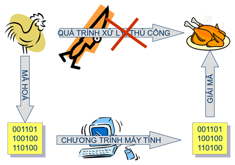
Con người có nhiều cách để có dữ liệu và thông tin. Người ta có thể lưu trữ thông tin qua tranh vẽ, giấy, sách báo, hình ảnh trong phim, băng từ. Trong thời đại hiện nay, khi lượng thông tin đến với chúng ta càng lúc càng nhiều thì con người có thể dùng một công cụ hỗ trợ cho việc lưu trữ, chọn lọc và xử lý thông tin gọi là máy tính điện tử (Computer). Máy tính điện tử giúp con người tiết kiệm rất nhiều thời gian, công sức và tăng độ chính xác cao trong việc tự động hoá một phần hay toàn phần của quá trình xử lý thông tin.
1.1.1.2. Máy tính điện tử và phân loại
a. Lịch sử phát triển của máy tính điện tử
Do nhu cầu cần tăng độ chính xác tính toán và giảm thời gian tính toán, con người đã quan tâm chế tạo các công cụ tính toán từ xưa: bàn tính tay của người Trung Quốc, máy cộng cơ học của nhà toán học Pháp Blaise Pascal (1623 - 1662), máy tính cơ học có thể cộng, trừ, nhân, chia của nhà toán học Đức Gottfried Wilhelmvon Leibniz (1646 - 1716), máy sai phân để tính các đa thức toán học ...
Tuy nhiên, máy tính điện tử thực sự bắt đầu hình thành vào thập niên 1950 và đến nay đã trải qua 5 thế hệ và dựa vào sự tiến bộ về công nghệ điện tử và vi điện tử cũng như các cải tiến về nguyên lý, tính năng và loại hình của nó.
· Thế hệ 1 (1950 - 1958): máy tính sử dụng các bóng đèn điện tử chân không, mạch riêng rẽ, vào số liệu bằng phiếu đục lỗ, điều khiển bằng tay. Máy có kích thước rất lớn, tiêu thụ năng lượng nhiều, tốc độ tính chậm khoảng 300 - 3.000 phép tính/s. Loại máy tính điển hình thế hệ 1 như EDVAC (Mỹ) hay BESEM (Liên Xô cũ),...
· Thế hệ 2 (1958 - 1964): máy tính dùng bộ xử lý bằng đèn bán dẫn, mạch in. Máy tính đã có chương trình dịch như Cobol, Fortran và hệ điều hành đơn giản. Kích thước máy còn lớn, tốc độ tính khoảng 10.000 -100.000 phép tính/s. Điển hình như loại IBM-1070 (Mỹ) hay MINSK (Liên Xô cũ),...
· Thế hệ 3 (1965 - 1974): máy tính được gắn các bộ vi xử lý bằng vi mạch điện tử cỡ nhỏ có thể có được tốc độ tính khoảng 100.000 - 1 triệu phép tính/s. Máy đã có các hệ điều hành đa chương trình, nhiều người đồng thời hoặc theo kiểu phân chia thời gian. Kết quả từ máy tính có thể in ra trực tiếp ở máy in. Điển hình như loại IBM-360 (Mỹ) hay EC (Liên Xô cũ),...
· Thế hệ 4 (1974 - nay): máy tính bắt đầu có các vi mạch đa xử lý có tốc độ tính hàng chục triệu đến hàng tỷ phép tính/s. Giai đoạn này hình thành 2 loại máy tính chính: máy tính cá nhân để bàn (Personal Computer - PC) hoặc xách tay (Laptop hoặc Notebook computer) và các loại máy tính chuyên nghiệp thực hiện đa chương trình, đa xử lý,... hình thành các hệ thống mạng máy tính (Computer Networks), và các ứng dụng phong phú đa phương tiện.
· Thế hệ 5 (1990 - nay): bắt đầu các nghiên cứu tạo ra các máy tính mô phỏng các hoạt động của não bộ và hành vi con người, có trí khôn nhân tạo với khả năng tự suy diễn phát triển các tình huống nhận được và hệ quản lý kiến thức cơ bản để giải quyết các bài toán đa dạng.
Máy tính lượng tử (còn gọi là siêu máy tính lượng tử) là một thiết bị tính toán sử dụng trực tiếp các hiệu ứng của cơ học lượng tử như tính chồng chập và vướng víu lượng tử để thực hiện các phép toán trên dữ liệu đưa vào. Máy tính lượng tử có phần cứng khác hẳn với máy tính kỹ thuật số dựa trên tranzitor. Trong khi máy tính kỹ thuật số đòi hỏi dữ liệu phải được mã hóa thành các chữ số nhị phân (bit), mà mỗi số được gán cho một trong hai trạng thái (0 và 1), tính toán lượng tử sử dụng các qubit (bit lượng tử) mà chúng có thể ở trong trạng thái chồng chập lượng tử. Một trong các mô hình lý thuyết về máy tính lượng tử là máy Turing lượng tử hay còn gọi là máy tính lượng tử phổ dụng. Máy tính lượng tử có những đặc điểm lý thuyết chung với máy tính phi tất định (non-deterministic) và máy tính xác suất (probabilistic automaton computers), với khả năng có thể đồng thời ở trong nhiều trạng thái.
b. Phân loại máy tính điện tử
Trên thực tế tồn tại nhiều cách phân loại máy tính khác nhau và chúng ta có thể phân loại máy tính theo hiệu năng tính toán như sau:
· Máy Vi tính (Microcomputer or PC): Loại này thường được thiết kế cho một người dùng, do đó giá thành rẻ. Hiện nay, máy vi tính khá phổ dụng và xuất hiện dưới khá nhiều dạng: máy để bàn (Destop), máy trạm (Workstation), máy xách tay (Notebook) và máy tính bỏ túi.
· Máy tính tầm trung (Mini Computer): Là loại máy tính có tốc độ và hiệu năng tính toán mạnh hơn các máy vi tính. Chúng thường được thiết kế để sử dụng cho các ứng dụng phức tạp. Giá của các máy này cũng cỡ hàng vài chục nghìn USD.
Máy tính lớn (Mainframe Computer) và Siêu máy tính (SuperComputer) là những máy tính có tổ chức bên trong rất phức tạp, có tốc độ siêu nhanh và hiệu năng tính toán cao, cỡ hàng tỷ phép tính/giây. Các máy tính này cho phép nhiều người dùng đồng thời và được sử dụng tại các Trung tâm tính toán/Viện nghiên cứu để giải quyết các bài toán cực kỳ phức tạp, yêu cầu cao về tốc độ. Chúng có giá thành rất đắt, cỡ hàng trăm ngàn, thậm chí hàng triệu USD.
1.1.1.1. Tin học và các ngành công nghệ liên quan
a. Tin học
Thuật ngữ Tin học có nguồn gốc từ tiếng Đức vào năm 1957 do Karl Steinbuch đề xướng trong 1 bài báo Informatik: Automatische Informationsverarbeitung (i.e. “Informatics: automatic information processing”). Sau đó vào năm 1962, Philippe Dreyfus người Pháp gọi là “informatique”, tiếp theo là Walter F.Bauer cũng sử dụng tên này. Phần lớn các nước Tây Âu, trừ Anh đều chấp nhận. Ở Anh người ta sử dụng thuật ngữ “computer science”, hay “computing science” là thuật ngữ dịch, Nga cũng chấp nhận tên informatika (1966).
Tin học được xem là ngành khoa học nghiên cứu các phương pháp, công nghệ và kỹ thuật xử lý thông tin một cách tự động. Công cụ chủ yếu sử dụng trong tin học là máy tính điện tử và các thiết bị truyền tin khác. Nội dung nghiên cứu của tin học chủ yếu gồm 2 phần:
· Kỹ thuật phần cứng (Hardware engineering): nghiên cứu chế tạo các thiết bị, linh kiện điện tử, công nghệ vật liệu mới... hỗ trợ cho việc thiết kế chế tạo máy tính và mạng máy tính, đẩy mạnh khả năng xử lý và truyền thông.
· Kỹ thuật phần mềm (Software engineering): nghiên cứu phát triển các hệ điều hành, các tiện ích chung cho máy tính và mạng máy tính, các phần mềm ứng dụng phục vụ các mục đích xử lý và khai thác thông tin khác nhau của con người.
b. Công nghệ thông tin (Information Technology - IT)
Thuật ngữ Công nghệ thông tin xuất hiện ở Việt nam vào những năm 90 của thế kỷ 20. Theo Information Technology Association of America (ITAA): “Công nghệ thông tin là ngành nghiên cứu các hệ thống thông tin dựa vào máy tính, đặc biệt là các phần mềm ứng dụng và phần cứng máy tính. Nói một cách ngắn gọn, IT xử lý với các máy tính điện tử và các phần mềm máy tính nhằm chuyển đổi, lưu trữ, bảo vệ, truyền tin và trích rút thông tin một cách an toàn”.
Theo NQ49-CP thì “Công nghệ thông tin là tập hợp các phương pháp khoa học, các phương tiện và công cụ kỹ thuật hiện đại - chủ yếu là kỹ thuật máy tính và viễn thông - nhằm tổ chức và khai thác và sử dụng có hiệu quả nguồn tài nguyên thông tin rất phong phú và tiềm tàng trong mọi lĩnh vực hoạt động của con người và xã hội... Công nghệ thông tin được phát triển trên nền tảng phát triển của các công nghệ Tin học - Điện tử - Viễn thông và Tự động hoá”.
Các ứng dụng ngày nay của IT:
· Quản trị dữ liệu
· Thiết kế hệ thống cơ sở dữ liệu
· Quản lý hệ thống thông tin
· Quản lý hệ thống
· …
c. Công nghệ thông tin và truyền thông
Ngày nay, khuynh hướng sử dụng “information” thay thế cho “data” và có xu thế mở rộng cho lĩnh vực truyền thông và trở thành ICT (Information and Communication Technology). Thuần tuý theo cách nói thì hai thuật ngữ này là như nhau.
Truyền thông máy tính, nói đơn giản là sự kết nối một số lượng máy tính với nhau trong một phạm vi địa lý nhỏ. Tuy nhiên, nhiều máy tính có thể kết nối với nhau theo một phạm vi rộng hơn và việc trao đổi thực hiện qua một mạng viễn thông nào đó. Internet - Mạng máy tính toàn cầu là một phát minh vĩ đại của nhân loại trong thế kỷ 20, đó cũng chính là sản phẩm của ngành Công nghệ thông tin và Truyền thông.
1.1.2. Biểu diễn dữ liệu trong máy tính và đơn vị thông tin
1.1.2.1. Biểu diễn dữ liệu trong máy tính
Thông tin và dữ liệu mà con người hiểu được tồn tại dưới nhiều dạng khác nhau, ví dụ như các số liệu, các ký tự văn bản, âm thanh, hình ảnh,… nhưng trong máy tính mọi thông tin và dữ liệu đều được biểu diễn bằng số nhị phân (chuỗi bit).
Để đưa dữ liệu vào cho máy tính, cần phải mã hoá nó về dạng nhị phân. Với các kiểu dữ liệu khác nhau cần có cách mã hoá khác nhau. Cụ thể:
· Các dữ liệu dạng số (số nguyên hay số thực) sẽ được chuyển đổi trực tiếp thành các chuỗi số nhị phân theo các chuẩn xác định.
· Các ký tự được mã hoá theo một bộ mã cụ thể, có nghĩa là mỗi ký tự sẽ tương ứng với một chuỗi số nhị phân.
· Các dữ liệu phi số khác như âm thanh, hình ảnh và nhiều đại lượng vật lý khác muốn đưa vào máy phải số hoá (digitalizing). Có thể hiểu một cách đơn giản khái niệm số hoá như sau: các dữ liệu tự nhiên thường là quá trình biến đổi liên tục, vì vậy để đưa vào máy tính, nó cần được biến đổi sang một dãy hữu hạn các giá trị số (nguyên hay thực) và được biểu diễn dưới dạng nhị phân.
Với các tín hiệu như âm thanh, video, hay các tín hiệu vật lý khác, qui trình mã hoá được biểu diễn như sau:
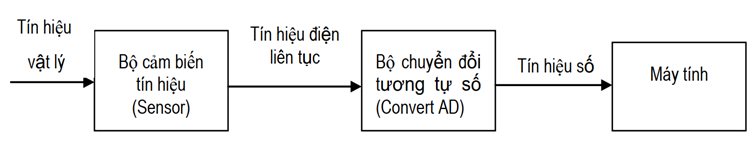
Tuy rằng mọi dữ liệu trong máy tính đều ở dạng nhị phân, song do bản chất của dữ liệu, người ta thường phân dữ liệu thành 2 dạng:
· Dạng cơ bản: gồm dạng số (nguyên hay thực) và dạng ký tự. Số nguyên không dấu được biểu diễn theo dạng nhị phân thông thường, số nguyên có dấu theo mã bù hai, còn số thực theo dạng dấu phảy động. Để biểu diễn một dữ liệu cơ bản, người ta sử dụng 1 số bit. Các bit này ghép lại với nhau để tạo thành từ: từ 8 bit, từ 16 bit,…
· Dạng có cấu trúc: Trên cơ sở dữ liệu cơ bản, trong máy tính, người ta xây dựng nên các dữ liệu có cấu trúc phục vụ cho các mục đích sử dụng khác nhau. Tuỳ theo cách “ghép” chúng ta có mảng, tập hợp, xâu, bản ghi,…
1.1.2.2. Biểu diễn số trong các hệ đếm
a. Hệ đếm
Hệ đếm là tập hợp các ký hiệu (bảng chữ số) và qui tắc sử dụng tập ký hiệu đó để biểu diễn và xác định các giá trị của các biểu diễn số. Ví dụ:
· Hệ đếm La mã có bảng chữ là {I,V,X,L,C,D,M} đại diện cho các giá trị là 1, 5,10, 50,100, 500 và 1000. Quy tắc biểu diễn số là viết các chữ số cạnh nhau. Quy tắc tính giá trị là nếu một chữ số có một chữ số bên trái có giá trị nhỏ hơn thì giá trị của cặp số bị tình bằng hiệu hai giá trị. Còn nếu số có giá trị nhỏ hơn đứng phía phải thì giá trị chung bằng tổng hai giá trị.
MLVI = 1000 + 50 + 5 +1 =1056
MLIV = 1000 + 50 + 5 -1 = 1054
· Hệ đếm thập phân có bảng chữ số {0,1,2,3,4,5,6,7,8,9}. Quy tắc biểu diễn là ghép các chữ số. Quy tắc tính giá trị là mỗi chữ số x đứng ở hàng thứ i tính từ bên phải có giá trị là x.10i-1. Như vậy một đơn vị ở một hàng sẽ có giá trị gấp 10 lần một đơn vị ở hàng kế cận bên phải. Giá trị của số là tổng giá trị của các chữ số có tính tới vị trí của nó.
Giá trị của 3294,5 là 3.103 + 2.102 + 9.101 + 4.100 + 5.10-1
Hệ đếm không theo vị trí là hệ đếm mà trong đó giá trị số lượng của chữ số không phụ thuộc vào vị trí của nó đứng trong con số. Hệ đếm La Mã là một hệ đếm không theo vị trí.
Hệ đếm theo vị trí là hệ đếm mà trong đó giá trị số lượng của chữ số còn phụ thuộc vào vị trí của nó đứng trong con số cụ thể. Hệ thập phân là một hệ đếm theo vị trí.
Mỗi hệ đếm có một số ký số (digits) hữu hạn. Tổng số ký số của mỗi hệ đếm được gọi là cơ số (base hay radix), ký hiệu là b.
Hệ đếm cơ số b (b ≥ 2 và nguyên dương) mang tính chất sau :
· Có b ký số để thể hiện giá trị số. Ký số nhỏ nhất là 0 và lớn nhất là b-1.
· Giá trị vị trí thứ n trong một số của hệ đếm bằng cơ số b lũy thừa n: bn
· Số N(b) trong hệ đếm cơ số (b) được biểu diễn bởi:
Nb = anan-1an-2…a1a0a-1a-2…a-m
trong đó, số N(b) có n+1 ký số biểu diễn cho phần nguyên và m ký số lẻ biểu diễn cho phần b_phân, và có giá trị trong hệ thập phân là:
N(b) = anbn + an-1bn-1 + an-2bn-2 +…+ a1b1 + a0b0 + a-1b-1 + a-2b-2 +…+ a-mb-m
hay là 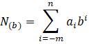
§ Hệ đếm thập phân
Hệ đếm thập phân hay hệ đếm cơ số 10 (b=10) là một trong các phát minh của người Ả rập cổ, bao gồm 10 ký số theo ký hiệu sau: 0, 1, 2, 3, 4, 5, 6, 7, 8, 9.
Qui tắc tính giá trị của hệ đếm này là mỗi đơn vị ở một hàng bất kỳ có giá trị bằng 10 đơn vị của hàng kế cận bên phải. Ở đây b=10. Bất kỳ số nguyên dương trong hệ thập phân có thể biểu diễn như là một tổng các số hạng, mỗi số hạng là tích của một số với 10 lũy thừa, trong đó số mũ lũy thừa được tăng thêm 1 đơn vị kể từ số mũ lũy thừa phía bên phải nó. Số mũ lũy thừa của hàng đơn vị trong hệ thập phân là 0.
§ Hệ đếm nhị phân
Hệ đếm nhị phân hay hệ đếm cơ số 2 (b=2). Đây là hệ đếm đơn giản nhất với 2 chữ số là 0 và 1. Mỗi chữ số nhị phân gọi là BIT (BInary digiT). Vì hệ nhị phân chỉ có 2 trị số là 0 và 1, nên khi muốn diễn tả một số lớn hơn, hoặc các ký tự phức tạp hơn thì cần kết hợp nhiều bit với nhau. Ta có thể chuyển đổi số trong hệ nhị phân sang số trong hệ thập phân quen thuộc.
§ Hệ đếm bát phân
Hệ bát phân hay hệ đếm cơ số 8 (b=8). Nếu dùng 1 tập hợp 3 bit thì có thể biểu diễn 8 trị khác nhau : 000, 001, 010, 011, 100, 101, 110, 111. Các trị này tương đương với 8 trị trong hệ thập phân là 0, 1, 2, 3, 4, 5, 7. Tập hợp các chữ số này gọi là hệ bát phân, là hệ đếm với b = 8 = 23. Trong hệ bát phân, trị vị trí là lũy thừa của 8
§ Hệ đếm thập lục phân
Hệ đếm thập lục phân hay hệ đếm cơ số b=16=24, tương đương với tập hợp 4 chữ số nhị phân (4 bit). Khi thể hiện ở dạng hexa-decimal, ta có 16 ký tự: 0, 1, 2, 3, 4, 5, 6, 7, 8, 9, A, B, C, D, E, F để biểu diễn các giá trị số. Các chữ in A, B, C, D, E, F tương ứng với các giá trị số là 10, 11, 12, 13, 14, 15 trong hệ đếm thập phân. Với hệ thập lục phân, trị vị trí là lũy thừa của 16.
Bảng quy đổi tương đương 16 chữ số đầu tiên của 4 hệ đếm
|
Hệ 10 |
Hệ 2 |
Hệ 8 |
Hệ 16 |
|
Hệ 10 |
Hệ 2 |
Hệ 8 |
Hệ 16 |
|
0 |
0 |
0 |
0 |
|
8 |
1000 |
10 |
8 |
|
1 |
1 |
1 |
1 |
|
9 |
1001 |
11 |
9 |
|
2 |
10 |
2 |
2 |
|
10 |
1010 |
12 |
A |
|
3 |
11 |
3 |
3 |
|
11 |
1011 |
13 |
B |
|
4 |
100 |
4 |
4 |
|
12 |
1100 |
14 |
C |
|
5 |
101 |
5 |
5 |
|
13 |
1101 |
15 |
D |
|
6 |
110 |
6 |
6 |
|
14 |
1110 |
16 |
E |
|
7 |
111 |
7 |
7 |
|
15 |
1111 |
17 |
F |
b. Chuyển đổi một số từ hệ thập phân sang hệ b
Đổi phần nguyên từ hệ thập phân sang hệ b
Tổng quát: Lấy số nguyên thập phân N(10) lần lượt chia cho b cho đến khi thương số bằng 0. Kết quả số chuyển đổi N(b) là các dư số trong phép chia viết ra theo thứ tự ngược lại. Ví dụ: số 12(10) = ?(2). Dùng phép chia cho 2 liên tiếp, ta có một loạt các số dư như sau:
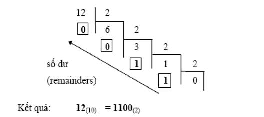
Đổi phần thập phân từ hệ thập phân sang hệ cơ số b
Tổng quát: Lấy phần thập phân N(10) lần lượt nhân với b cho đến khi phần thập phân của tích số bằng 0. Kết quả số chuyển đổi N(b) là các số phần nguyên trong phép nhân viết ra theo thứ tự tính toán.
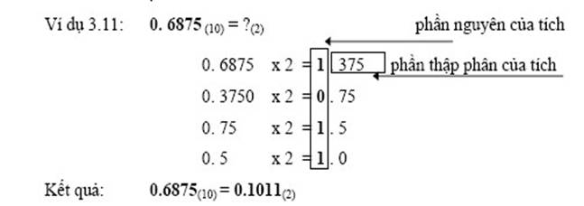
1.1.2.3. Đơn vị thông tin
Đơn vị nhỏ nhất để biểu diễn thông tin gọi là bit. Một bit tương ứng với một sự kiện có 1 trong 2 trạng thái là: Tắt (Off) / Mở (On) hay Đúng (True) / Sai (False)
Ví dụ: Một mạch đèn có 2 trạng thái là:
· Tắt (Off) khi mạch điện qua công tắc là hở
· Mở (On) khi mạch điện qua công tắc là đóng
Số học nhị phân sử dụng hai ký số 0 và 1 để biểu diễn các số. Vì khả năng sử dụng hai số 0 và 1 là như nhau nên một chỉ thị chỉ gồm một chữ số nhị phân có thể xem như là đơn vị chứa thông tin nhỏ nhất.
Bit là chữ viết tắt của BInary digiT. Trong tin học, người ta thường sử dụng các đơn vị đo thông tin lớn hơn như sau:
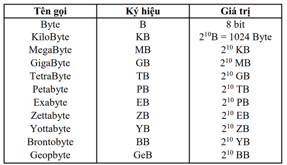
1.1. KIẾN THỨC CƠ BẢN VỀ MÁY TÍNH VÀ MẠNG MÁY TÍNH
1.1.1. Hệ thống máy tính và phần mềm máy tính
1.1.1.1. Hệ thống máy tính
Mỗi loại máy tính có thể có hình dạng hoặc cấu trúc khác nhau. Một cách tổng quát, máy tính điện tử là một hệ xử lý thông tin tự động gồm 2 phần chính: phần cứng và phần mềm.
Phần cứng (hardware) có thể được hiểu đơn giản là tất cả các cấu kiện, linh kiện điện, điện tử trong một hệ máy.
Phần mềm (software) có thể xem như một bộ chương trình gồm các chỉ thị điện tử ra lệnh cho máy tính thực hiện một điều nào đó theo yêu cầu của người sử dụng. Phần mềm có thể được ví như phần hồn của máy tính mà phần cứng của nó được xem như phần xác.
a. Mô hình cơ bản của máy tính
Chức năng của hệ thống máy tính
Máy tính thực hiện các chức năng cơ bản sau:
· Xử lý dữ liệu: Đây là chức năng quan trọng nhất của máy tính. Dữ liệu có thể có rất nhiều dạng khác nhau và có yêu cầu xử lý khác nhau.
· Lưu trữ dữ liệu: Các dữ liệu đưa vào máy tính có thể được lưu trong bộ nhớ để khi cần chúng sẽ được lấy ra xử lý. Cũng có khi dữ liệu đưa vào được xử lý ngay. Các kết quả xử lý được lưu trữ lại trong bộ nhớ và sau đó có thể phục vụ cho các xử lý tiếp.
· Trao đổi dữ liệu: Máy tính cần phải trao đổi dữ liệu giữa các thành phần bên trong và với thế giới bên ngoài. Các thiết bị vào-ra được coi là nguồn cung cấp dữ liệu hoặc nơi tiếp nhận dữ liệu. Tiến trình trao đổi dữ liệu với các thiết bị gọi là vào-ra. Khi dữ liệu được vận chuyển trên khoảng cách xa với các thiết bị hoặc máy tính gọi là truyền dữ liệu (data communication).
· Điều khiển: Cuối cùng, máy tính phải điều khiển các chức năng trên.
Cấu trúc của hệ thống máy tính.
Hệ thống máy tính bao gồm các thành phần cơ bản sau: đơn vị xử lý trung tâm (Central Processor Unit – CPU), bộ nhớ chính (Main Memory), hệ thống vào ra (Input-Output System) và liên kết hệ thống (Buses) như chỉ ra trong hình dưới đây, với các chức năng chính của các thành phần:
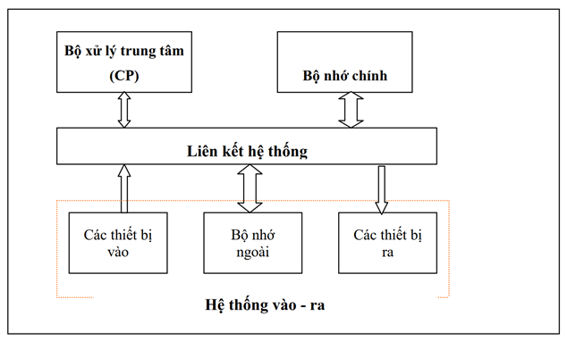
Các thành phần chính của hệ thống máy tính
· Bộ xử lý trung tâm – CPU: Điều khiển các hoạt động của máy tính và thực hiện xử lý dữ liệu.
· Bộ nhớ chính (Main Memory): lưu trữ chương trình và dữ liệu.
· Hệ thống vào ra (Input-Output System): trao đổi thông tin giữa thế giới bên ngoài với máy tính.
· Liên kết hệ thống (System Interconnection): kết nối và vận chuyển thông tin giữa CPU, bộ nhớ chính và hệ thống vào ra của máy tính với nhau.
Hoạt động của máy tính.
Hoạt động cơ bản của máy tính là thực hiện chương trình. Chương trình gồm một tập các lệnh được lưu trữ trong bộ nhớ. Việc thực hiện chương trình là việc lặp lại chu trình lệnh bao gồm các bước sau:
- CPU phát địa chỉ từ con trỏ lệnh đến bộ nhớ nơi chứa lệnh cần nhận.
- CPU nhận lệnh từ bộ nhớ đưa về thanh ghi lệnh
- Tăng nội dung con trỏ lệnh để trỏ đến nơi lưu trữ lệnh kế tiếp
- CPU giải mã lệnh để xác định thao tác của lệnh
- Nếu lệnh sử dụng dữ liệu từ bộ nhớ hay cổng vào ra thì cần phải xác định địa chỉ nơi chứa dữ liệu.
- CPU nạp các dữ liệu cần thiết vào các thanh ghi trong CPU
- Thực thi lệnh
- Ghi kết quả vào nơi yêu cầu
- Quay lại bước đầu tiên để thực hiện lệnh tiếp theo.
b. Bộ xử lý trung tâm
Bộ xử lý trung tâm (Central Proccesor Unit- CPU) điều khiển các thành phần của máy tính, xử lý dữ liệu. CPU hoạt động theo chương trình nằm trong bộ nhớ chính, nhận các lệnh từ bộ nhớ chính, giải mã lệnh để phát ra các tín hiệu điều khiển thực thi lệnh. Trong quá trình thực hiện lệnh, CPU có trao đổi với bộ nhớ chính và hệ thống vào ra. CPU có 3 bộ phận chính: khối điều khiển, khối tính toán số học và logic, và tập các thanh ghi.
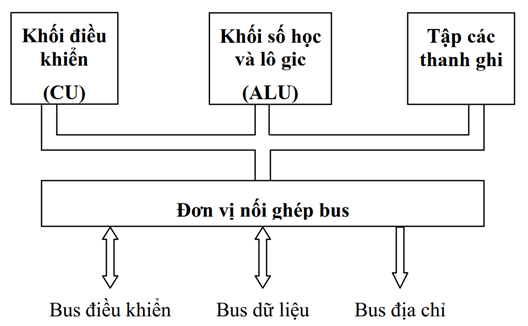
Mô hình cơ bản của CPU
Khối điều khiển (CU: Control Unit): là trung tâm điều hành máy tính. Nó có nhiệm vụ giải mã các lệnh, tạo ra các tín hiệu điều khiển công việc của các bộ phận khác của máy tính theo yêu cầu của người sử dụng hoặc theo chương trình đã cài đặt.
Khối tính toán số học và logic (ALU: Arithmetic-Logic Unit): bao gồm các thiết bị thực hiện các phép tính số học (cộng, trừ, nhân, chia, ...), các phép tính logic (AND, OR, NOT, XOR) và các phép tính quan hệ (so sánh lớn hơn, nhỏ hơn, bằng nhau, ...)
Tập các thanh ghi (Registers): Được gắn chặt vào CPU bằng các mạch điện tử làm nhiệm vụ bộ nhớ trung gian. Các thanh ghi mang các chức năng chuyên dụng giúp tăng tốc độ trao đổi thông tin trong máy tính. Ngoài ra, CPU còn được gắn với một đồng hồ (clock) hay còn gọi là bộ tạo xung nhịp. Tần số đồng hồ càng cao thì tốc độ xử lý thông tin càng nhanh. Thường thì đồng hồ được gắn tương xứng với cấu hình máy và có các tần số dao động (cho các máy Pentium 4 trở lên) là 2.0 GHz, 2.2 GHz, ... hoặc cao hơn. Bộ vi xử lý lõi kép (dualcore) hoặc đa lõi (multicore) được sản xuất bởi Intel và AMD. Các CPU này có nhiều hơn một bộ xử lý (hai cho một lõi kép, nhiều hơn cho một đa lõi) trên một chip duy nhất. Sử dụng nhiều bộ vi xử lý có nhiều lợi thế hơn một đơn bộ xử lý CPU, trong đó có khả năng cải thiện đa nhiệm và hiệu suất hệ thống, tiêu thụ điện năng thấp hơn, giảm thiểu sử dụng tài nguyên hệ thống.
c. Bộ nhớ
Bộ nhớ là thiết bị lưu trữ thông tin trong quá trình máy tính xử lý. Bộ nhớ bao gồm bộ nhớ trong và bộ nhớ ngoài.
Bộ nhớ trong
Bộ nhớ trong (Internal Memory) là những thành phần nhớ mà CPU có thể trao đổi trực tiếp: các lệnh mà CPU thực thi, các dữ liệu mà CPU sử dụng đều phải nằm trong bộ nhớ trong. Bộ nhớ trong có dung lượng không thật lớn song có tốc độ trao đổi thông tin cao.
Bộ nhớ trong của máy tính được thiết kế bằng bộ nhớ bán dẫn với 2 loại ROM và RAM, trong đó:
ROM (Read Only Memory) là Bộ nhớ chỉ đọc thông tin, dùng để lưu trữ các chương trình hệ thống, chương trình điều khiển việc nhập xuất cơ sở (ROM-BIOS : ROM-Basic Input/Output System). Thông tin trên ROM không thể thay đổi và không bị mất ngay cả khi không có điện.
RAM (Random Access Memory) là Bộ nhớ truy xuất ngẫu nhiên, được dùng để lưu trữ dữ liệu và chương trình trong quá trình thao tác và tính toán. RAM có đặc điểm là nội dung thông tin chứa trong nó sẽ mất đi khi mất điện hoặc tắt máy. Dung lượng bộ nhớ RAM cho các máy tính hiện nay thông thường vào khoảng 128 MB, 256 MB, 512 MB và có thể hơn nữa. Ngoài ra, trong máy tính cũng còn phần bộ nhớ khác: Cache Memory cũng thuộc bộ nhớ trong. Bộ nhớ cache được đặt đệm giữa CPU và bộ nhớ trong nhằm làm tăng tốc độ trao đổi thông tin.
Bộ nhớ cache thuộc bộ nhớ RAM, có dung lượng nhỏ. Nó chứa một phần chương trình và dữ liệu mà CPU đang xử lý, do vậy thay vì lấy lệnh và dữ liệu từ bộ nhớ chính, CPU sẽ lấy trên cache. Hầu hết các máy tính hiện nay đều có cache tích hợp trên chip vi xử lý.
Bộ nhớ ngoài
Bộ nhớ ngoài (External Memory) Là thiết bị lưu trữ thông tin với dung lượng lớn, thông tin không bị mất khi không có điện. Các thông tin này có thể là phần mềm máy tính hay dữ liệu. Bộ nhớ ngoài được kết nối với hệ thống thông qua mô-đun nối ghép vào-ra. Như vậy, bộ nhớ ngoài về chức năng thuộc bộ nhớ, song về cấu trúc nó lại thuộc hệ thống vào ra. Có thể cất giữ và di chuyển bộ nhớ ngoài độc lập với máy tính. Hiện nay có các loại bộ nhớ ngoài phổ biến như:
· Đĩa mềm (Floppy disk) : là loại đĩa đường kính 3.5 inch dung lượng 1.44 MB.
· Đĩa cứng (Hard disk) : phổ biến là đĩa cứng có dung lượng 20 GB, 30 GB, 40 GB, 60 GB, và lớn hơn nữa.
· Đĩa quang (Compact disk): loại 4.72 inch, là thiết bị phổ biến dùng để lưu trữ các phần mềm mang nhiều thông tin, hình ảnh, âm thanh và thường được sử dụng trong các phương tiện đa truyền thông (multimedia). Có hai loại phổ biến là: đĩa CD (dung lượng khoảng 700 MB) và DVD (dung lượng khoảng 4.7 GB).
· Các loại bộ nhớ ngoài khác như thẻ nhớ (Memory Stick, Compact Flash Card), USB Flash Drive có dung lượng phổ biến là 32 MB, 64 MB, 128 MB, ...
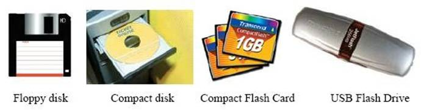
Một số loại bộ nhớ ngoài
d. Hệ thống vào – ra
Chức năng của hệ thống vào-ra là trao đổi thông tin giữa máy tính với thế giới bên ngoài. Hệ thống vào-ra được xây dựng dựa trên hai thành phần: các thiết bị vào-ra (IO devices) hay còn gọi là thiết bị ngoại vi (Peripheral devices) và các mô-đun ghép nối vào-ra (IO Interface modules)
Mô đun ghép nối vào ra
Các thiết bị vào ra không kết nối trực tiếp với CPU mà được kết nối thông qua các mô-đun ghép nối vào-ra. Trong các mô đun ghép nối vào-ra có các cổng vào-ra IO Port), các cổng này cũng được đánh địa chỉ bởi CPU, có nghĩa là mỗi cổng cũng có một địa chỉ xác định. Mỗi thiết bị vào-ra kết nối với CPU thông qua cổng tương ứng với địa chỉ xác định.
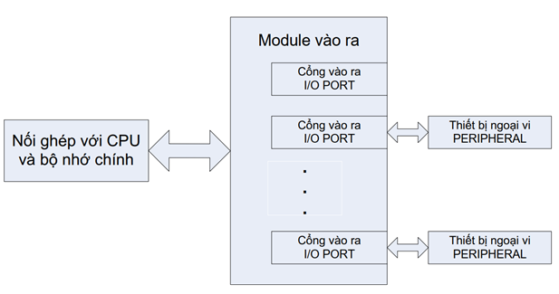
Thiết bị vào ra
Mỗi thiết bị vào-ra làm nhiệm vụ chuyển đổi thông tin từ một dạng vật lý nào đó về dạng dữ liệu phù hợp với máy tính hoặc ngược lại. các thiết bị ngoại vi thông dụng như bàn phím, màn hình, máy in hay một máy tính khác. Người ta có thể phân các thiết bị ngoại vi ra nhiều loại:
- Thiết bị thu nhận dữ liệu: Bàn phím, chuột, máy quét ảnh,…
- Thiết bị hiển thị dữ liệu: màn hình, máy in,…
- Thiết bị nhớ: các loại ổ đĩa
- Thiết bị truyền thông: modem
- Thiết bị hỗ trợ đa phương tiện: hệ thống âm thanh, hình ảnh,…
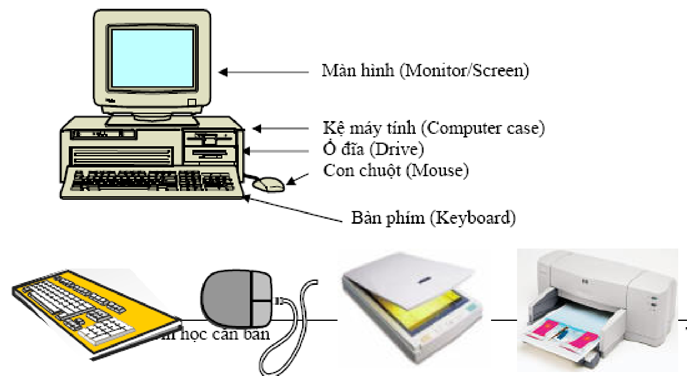
Một số thiết bị vào ra
Các thiết bị vào:
· Bàn phím (Keyboard, thiết bị nhập chuẩn): là thiết bị nhập dữ liệu và câu lệnh, bàn phím máy vi tính phổ biến hiện nay là một bảng chứa 104 phím có các tác dụng khác nhau. Có thể chia làm 3 nhóm phím chính:
- Nhóm phím đánh máy: gồm các phím chữ, phím số và phím các ký tự đặc biệt (~,!, @, #, $, %, ^,&, ?, ...).
- Nhóm phím chức năng (function keypad): gồm các phím từ F1 đến F12 và các phím như ← ↑ → ↓ (phím di chuyển từng điểm), phím PgUp (lên trang màn hình), PgDn (xuống trang màn hình), Insert (chèn), Delete (xoá), Home (về đầu), End (về cuối)
- Nhóm phím số (numeric keypad) như NumLock (cho các ký tự số), CapsLock (tạo các chữ in), ScrollLock (chế độ cuộn màn hình) thể hiện ở các đèn chỉ thị.
· Chuột (Mouse): là thiết bị cần thiết phổ biến hiện nay, nhất là các máy tính chạy trong môi trường Windows. Con chuột có kích thước vừa nắm tay di chuyển trên một tấm phẳng (mouse pad) theo hướng nào thì dấu nháy hoặc mũi tên trên màn hình sẽ di chuyển theo hướng đó tương ứng với vị trí của của viên bi hoặc tia sáng (optical mouse) nằm dưới bụng của nó. Một số máy tính có con chuột được gắn trên bàn phím.
· Máy quét (Scanner): là thiết bị dùng để nhập văn bản hay hình vẽ, hình chụp vào máy tính. Thông tin nguyên thuỷ trên giấy sẽ được quét thành các tín hiệu số tạo thành các tập tin ảnh (image file).
Các thiết bị ra:
· Màn hình (Screen hay Monitor, thiết bị ra chuẩn): dùng để hiển thị thông tin cho người sử dụng xem. Thông tin được thể hiện ra màn hình bằng phương pháp ánh xạ bộ nhớ (memory mapping), với cách này màn hình chỉ việc đọc liên tục bộ nhớ và hiển thị (display) bất kỳ thông tin nào hiện có trong vùng nhớ ra màn hình. Màn hình phổ biến hiện nay trên thị trường là màn hình màu SVGA 15”,17”, 19” với độ phân giải có thể đạt 1280x1024 pixel.
· Máy in (Printer): là thiết bị ra để đưa thông tin ra giấy. Máy in phổ biến hiện nay là loại máy in ma trận điểm (dot matrix) loại 24 kim, máy in phun mực, máy in laser trắng đen hoặc màu.
· Máy chiếu (Projector): chức năng tương tự màn hình, thường được sử dụng thay cho màn hình trong các buổi Seminar, báo cáo, thuyết trình, …
e. Liên kết hệ thống
Giữa các thành phần của một hệ thống máy tính hay ngay trong một thành phần phức tạp như CPU cũng cần trao đổi với nhau. Nhiệm vụ này được thực thi bởi hệ thống kết nối mà chúng ta quen gọi là bus. Tùy theo nhiệm vụ của chúng mà chúng ta phân làm 3 loại chính:
· Bus điều khiển (Control bus): chuyển các thông tin/tín hiệu điều khiển từ thành phần này đến thành phần khác: CPU phát tín hiệu để điều khiển bộ nhớ hay hệ thống vào-ra hoặc từ hệ thống vào-ra gửi tín hiệu yêu cầu đến CPU.
· Bus dữ liệu (Data bus): làm nhiệm vụ chuyển tải dữ liệu (nội dung ngăn nhớ, kết quả xử lý) từ CPU đến bộ nhớ hay ngược lại hoặc từ bộ nhớ/CPU ra các thiết bị ngoại vi. Đây là loại bus 2 chiều. Các máy tính hiện nay thường có đường bit dữ liệu 32 hay 64 bit.
· Bus địa chỉ (Address bus): chuyển tải địa chỉ của các ngăn nhớ khi muốn truy nhập (đọc/ghi) nội dung của ngăn nhớ đó hoặc là địa chỉ cổng của các thiết bị mà CPU cần trao đổi. Độ rộng (số bit) của bus địa chỉ cho biết dung lượng cực đại của bộ nhớ mà CPU có thể quản lý được. Với độ rộng là n thì dung lượng bộ nhớ tối đa sẽ là 2n.
Cổng (Port): Một cổng hoạt động như một mạch ghép nối (interface) giữa các thiết bị ngoại vi của hệ thống và máy tính, cho phép trao đổi dữ liệu khi chúng được kết nối. Chúng ta có thể thấy trên mặt sau của máy tính xách tay như trong hình minh họa dưới đây cổng có thể có hình dạng và kích cỡ khác nhau.
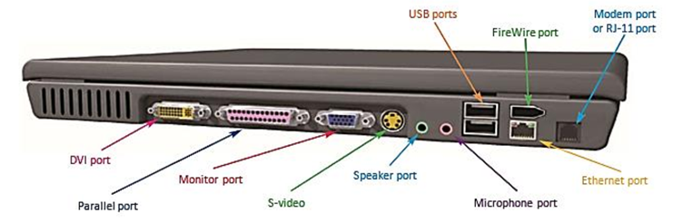
Các cổng thông thường trên máy tính xách tay
1.1.1.2. Phần mềm máy tính
Phần mềm máy tính (Computer Software) thường được gọi tắt là phần mềm (Software). Là một tập hợp gồm nhiều câu lệnh hay chỉ thị (Instruction) viết bằng một hoặc nhiều ngôn ngữ lập trình. Chúng được sắp xếp theo một trình tự xác định, dữ liệu hay tài liệu liên quan để phục vụ cho mục đích thực hiện một số chức năng, nhiệm vụ giải quyết các vấn đề nào đó.
Quy trình làm việc của phần mềm máy tính được liên kết với phần cứng máy tính (Computer Hardware). Phần mềm sẽ đưa ra các chỉ thị trực tiếp lên phần cứng để yêu cầu vận hành các chương trình hay phần mềm khác trên một hệ thống.
Phần mềm trên máy tính có thể phân chia thành 3 loại: phần mềm hệ thống, phần mềm ứng dụng và phần mềm lập trình.
Phần mềm hệ thống
Đây là phần mềm chính chạy trên máy tính. Phần mềm này sẽ chịu trách nhiệm kích hoạt phần cứng và điều khiển, điều phối hoạt động khi mở máy tính. Tất cả các chương trình ứng dụng cũng được điều khiển bởi phần mềm hệ thống. Một số phần mềm hệ thống rất quen thuộc đối với chúng ta đó là:
Hệ điều hành: là phần mềm hệ thống hoạt động như một giao diện cho phép người dùng giao tiếp với máy tính. Hệ điều hành đảm nhiệm chức năng quản lý và điều phối hoạt động của phần cứng và phần mềm của máy tính. Hiện nay, hệ điều hành Microsoft Windows, và Apple Mac OS X là phổ biến nhất.
BIOS: là một loại phần mềm hệ thống, được lưu trữ trong Bộ nhớ Chỉ Đọc (ROM) nằm trên bo mạch chủ hoặc trong bộ nhớ flash. Khi bật máy tính, BIOS là phần mềm đầu tiên được kích hoạt, nó tải các trình điều khiển của đĩa cứng vào bộ nhớ cũng như hỗ trợ hệ điều hành tự tải vào bộ nhớ.
Chương trình khởi động: khi bật máy tính, các lệnh trong ROM sẽ tự động được thực thi để tải chương trình khởi động vào bộ nhớ và thực hiện các lệnh của nó. Trong chương trình BIOS có một tập hợp các lệnh cơ bản cho phép máy tính thực hiện các lệnh nhập / xuất cơ bản để khởi động máy tính.
Bộ hợp dịch: khi nhận các lệnh cơ bản của máy tính sẽ tiến hành chuyển chúng thành một mẫu bit. Lúc đó, bộ xử lý sẽ sử dụng các bit này để thực hiện các hoạt động cơ bản.
Trình điều khiển thiết bị driver: là phần mềm. Từ phần mềm này, hạt nhân của máy tính (CPU) sẽ giao tiếp với các phần cứng khác nhau mà không cần phải đi sâu tìm hiểu chi tiết về cách phần cứng hoạt động. Nó cung cấp một giao diện cho phép máy tính sử dụng phần cứng. Mục đích của trình điều khiển là cho phép phần cứng hoạt động trơn tru và cho phép nó được sử dụng với các hệ điều hành khác nhau.
Phần mềm ứng dụng
Phần mềm ứng dụng là một tập hợp các chương trình được thiết kế để thực hiện một nhiệm vụ cụ thể. Phần mềm ứng dụng không kiểm soát hoạt động của máy tính nên máy tính vẫn chạy bình thường khi không có phần mềm ứng dụng. Với phần mềm ứng dụng, người dùng có thể dễ dàng cài đặt hoặc gỡ bỏ. Phần mềm ứng dụng thường được thiết kế giao diện đơn giản, dễ sử dụng, mang đến những tiện ích tối ưu nhất cho người sử dụng.
Một số phần mềm ứng dụng rất quen thuộc là:
Phần mềm xử lý văn bản (MS Word, WordPad, Notepad): Người dùng sử dụng phần mềm này để tạo, chỉnh sửa, định dạng và thao tác văn bản, hình ảnh…
Phần mềm bảng tính (Microsoft Excel): Nó cho phép người dùng thực hiện các phép tính, lưu trữ dữ liệu, tạo biểu đồ…
Phần mềm đa phương tiện (VLC player, Window Media Player): Người dùng sử dụng phần mềm đa phương tiện để chỉnh sửa video, âm thanh và văn bản. Bạn có thể kết hợp các thông tin này với nhau để cho ra một sản phẩm phục vụ công việc hay học tập.
Phần mềm doanh nghiệp (SCM, BI, CRM, ERP): Phần mềm doanh nghiệp được phát triển phục vụ cho các hoạt động kinh doanh.
Phần mềm lập trình
Phần mềm lập trình là một tập hợp hoặc tập hợp các công cụ giúp các nhà phát triển viết phần mềm hoặc chương trình khác. Phần mềm lập trình hỗ trợ tạo, gỡ lỗi và bảo trì phần mềm, ứng dụng hoặc chương trình. Hiểu một cách đơn giản, phần mềm này hỗ trợ dịch ngôn ngữ lập trình sang ngôn ngữ máy. Người dùng không sử dụng phần mềm lập trình này.
*Phần mềm mã nguồn mở
Phần mềm nguồn mở (Open source software - OSS) là phần mềm với mã nguồn được công bố và sử dụng một giấy phép nguồn mở. Giấy phép này cho phép bất cứ ai cũng có thể nghiên cứu, thay đổi, cải tiến phần mềm và phân phối phần mềm ở dạng chưa thay đổi hoặc đã thay đổi.
Phần mềm mã nguồn mở cho phép bất cứ ai cũng có thể chỉnh sửa, thay đổi hay sử dụng mã nguồn này để phát triển ra các phần mềm khác. Không chỉ miễn phí về giá mua mà còn miễn phí về bản quyền, người dùng được tùy ý sao chép và công khai nghiên cứu, làm việc mà không cần phải xin phép ai, điều mà không được phép đối với phần mềm mã nguồn đóng (Phần mềm thương mại).
Để phân định giữa phần mềm mã nguồn mở với các loại phần mềm khác cần dựa trên tính công khai của mã nguồn do lập trình viên/đơn vị sáng tạo ra quy định.
Nếu phần mềm mã nguồn mở công khai bộ mã nguồn cho mọi người cùng phân tích, sao chép và chỉnh sửa thì phần mềm mã nguồn đóng (độc quyền) lại ngược lại. Những phần mềm này chỉ cho phép những người đã tạo ra mới có quyền kiểm soát, bao gồm các thác tác truy cập, tìm lỗi, chỉnh sửa hay nâng cấp. Để sử dụng phần mềm độc quyền, người dùng phải đồng ý cam kết không tác động lên phần mềm ngoài phạm vi cho phép.
Phần mềm mã nguồn mở không có bảo hành như mã nguồn đóng. Do đó, nếu gặp vấn đề kỹ thuật trong khi sử dụng cũng sẽ không được hỗ trợ khắc phụ.
Phần mềm mã nguồn mở cũng phải đăng ký, được quy định tại các đơn vị quy chuẩn giấy phép mã nguồn mở phổ biến như Apache License, BSD license, GNU General Public License, GNU Lesser General Public License, MIT License,…
Một số phần mềm mã nguồn mở miễn phí phổ biến có thể thay thế cho các phần mềm độc quyền trả phí:
Phần mềm mã nguồn mở OpenOffice
OpenOffice là bộ công cụ cung cấp các ứng dụng văn phòng, có thể thay thế cho Microsoft Office. Nó bao gồm các chức năng như:
- Writer: soạn thảo văn bản thay cho Document
- Calc: Bảng tính thay cho Excel
- Impress tương tự Power Point
- Draw vẽ vector
- Math tương tự như MS Equation Editor để soạn thảo công thức toán học
Phần mềm mã nguồn mở 7-Zip
Có lẽ, 7-Zip là phần mềm mã nguồn mở quen mặt nhất với chúng ta, được tạo ra để thay thế cho WinZip. Nó được dùng để nén/giải nén định dạng ZIP, RAR, CAB và ISO. Tương tự WinZip, 7-Zip còn có khả năng mã hóa những file nén cần bảo mật.
Unikey - Phần mềm mã nguồn mở do người Việt phát triển
Unikey là bộ gõ tiếng Việt phổ biến nhất hiện nay, cung cấp nhiều bảng mã tiếng Việt và tính năng hữu ích. Phần lõi xử lý tiếng Việt Unikey Input Engine cũng được sử dụng trong các chương trình bàn phím mặc định của các hệ điều hành Linux, Mac OS X và đặc biệt cho các thiết bị iOS. Unikey có mã nguồn được mở theo giấy phép GNU (General Public License).
1.1.1. Mạng máy tính
1.1.1.1. Khái niệm và phân loại mạng máy tính
a. Khái niệm mạng máy tính
Mạng máy tính hay mạng (computer network, network) là một tập hợp gồm nhiều máy tính hoặc thiết bị xử lý thông tin được kết nối với nhau qua các đường truyền và có sự trao đổi dữ liệu với nhau.
Nhờ có mạng máy tính, thông tin từ một máy tính có thể được truyền sang máy tính khác. Có thể ví mạng máy tính như một hệ thống giao thông vận tải mà hàng hoá trên mạng là dữ liệu, máy tính là nhà máy lưu trữ xử lý dữ liệu, hệ thống đường truyền như là hệ thống đường sá giao thông.
b. Phân loại mạng máy tính
Có nhiều cách phân loại mạng máy tính. Sau đây là một số cách phân loại thông dụng.
Cách 1: Theo mối quan hệ giữa các máy trong mạng
· Mạng bình đẳng (peer-to-peer) các máy có quan hệ ngang hàng, một máy có thể yêu cầu một máy khác phục vụ.
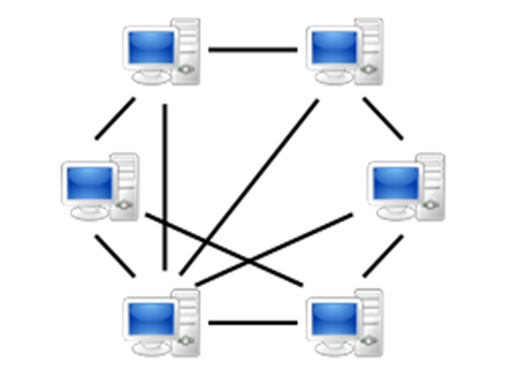
Mô hình mạng bình đẳng (peer-to-peer)
· Mạng khách/chủ (client/server). Một số máy là server (máy chủ) chuyên phục vụ các máy khác gọi là máy khách (client) hay máy trạm (workstation) khi có yêu cầu. Các dịch vụ có thể là cung cấp thông tin, tính toán hay các dịch vụ Internet.
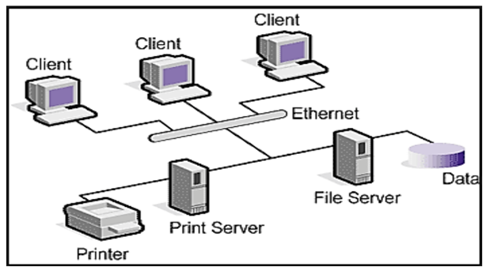
Mô hình mạng khách/chủ (client/server)
Cách 2: Theo quy mô địa lí. Tùy theo quy mô địa lí có thể phân ra 3 loại chính là:
· LAN (Local Area Network) mạng cục bộ ở trong phạm vi nhỏ, ví dụ bán kính 500m, số lượng máy tính không quá nhiều, mạng không quá phức tạp.
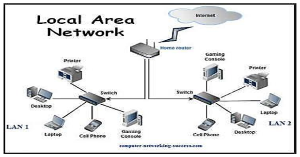
Mô hình mạng LAN
· WAN (Wide Area Network) mạng diện rộng, các máy tính có thể ở các thành phố khác nhau. Bán kính có thể 100-200 km. Ví dụ mạng của Tổng cục thuế.
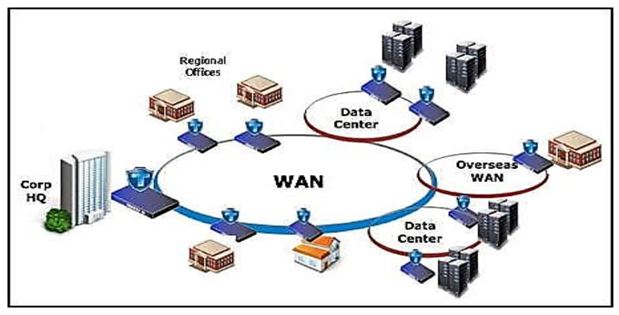
Mô hình mạng WAN
· GAN (Global Area Network) mạng toàn cầu, máy tính ở nhiều nước khác nhau.
Thường mạng toàn cầu là kết hợp của nhiều mạng con. Ví dụ mạng Internet.
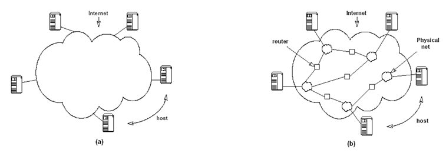
Mạng Internet
(a) - Mạng Internet dưới con mắt người sử dụng. Các máy được nối với nhau thông qua một mạng duy nhất.
(b) - Kiến trúc tổng quát của mạng Internet. Các routers cung cấp các kết nối giữa các mạng.
1.1.1.2. Các thành phần cơ bản của mạng máy tính
a. Các thiết bị đầu cuối
Các thiết bị đầu cuối như máy tính, điện thoại, máy in,… các thiết bị này được kết nối với nhau thông qua thiết bị kết nối hoặc môi trường truyền dẫn.
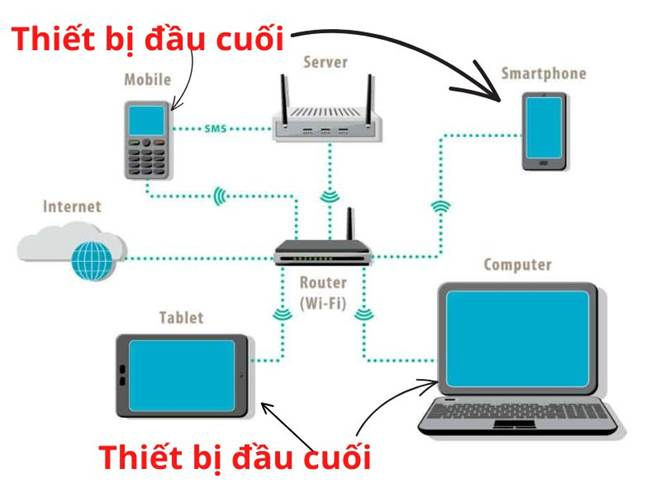
b. Các phương tiện và môi trường truyền dẫn
Phương tiện truyền thông đề cập đến các phương thức cung cấp và nhận dữ liệu hoặc thông tin. Trong mạng máy tính, có hai phương thức truyền thông: có dây và không dây.
Phương tiện truyền thông có dây đề cập đến các loại cáp kết nối máy tính với nhau. Có rất nhiều loại khác nhau như cáp xoắn đôi (twisted-pair cable), cáp đồng trục (coaxial cable), cáp quang (fiber optics).
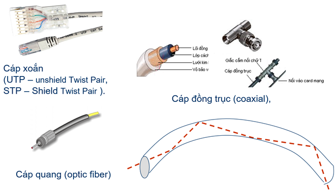
Môi trường truyền dẫn có dây
Phương thức không dây gồm các phương thức truyền dẫn như sóng vô tuyến (radio wave), sóng vi ba (microwaves), vệ tinh (communication satellites).
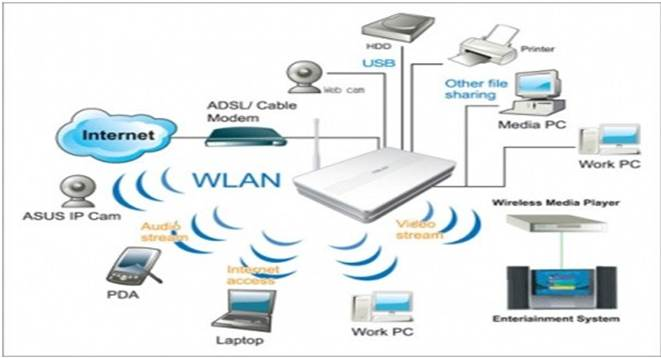
Môi trường truyền dẫn không dây
Khi đề cập đến một kết nối dữ liệu, băng thông, tốc độ truyền thông, hoặc tốc độ kết nối là tổng tốc độ truyền tối đa của một cáp mạng hoặc thiết bị. Về cơ bản, nó là một phép đo dữ liệu có thể được gửi qua một kết nối có dây hoặc không dây nhanh như thế nào, thường tốc độ đo bằng bit trên giây (bps).
c. Thiết bị liên kết mạng
Có rất nhiều thiết bị mạng khác nhau, mỗi thiết bị có một đặc điểm và vai trò riêng, sau đây là một số thiết bị nối kết mạng thông dụng như Modem, Repeater, Bridge, Router, Gateway Hub và Switch.
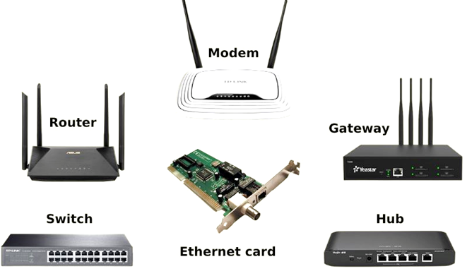
Một số thiết bị liên kết mạng
d. Phần mềm mạng
Hệ điều hành mạng là một phần mềm điều khiển sự hoạt động của mạng.
Phần mềm mạng cho phép thực hiện việc trao đổi thông tin giữa các máy tính: Là những ứng dụng, chương trình được cài đặt trên các thiết bị đầu cuối và có chức năng chia sẻ dữ liệu qua các đường truyền không dây.
1.1.1.3. Kiến trúc mạng máy tính và Internet
a. Kiến trúc mạng máy tính
Kiến trúc mạng máy tính (network architecture) thể hiện cách kết nối máy tính với nhau và qui ước truyền dữ liệu giữa các máy tính như thế nào. Cách nối các máy tính với nhau gọi là hình trạng (topology) của mạng. Tập các qui ước truyền thông gọi là giao thức (protocol).
Có hai kiểu nối mạng chủ yếu là điểm-điểm (point to point) và quảng bá (broadcast). Trong kiểu điểm-điểm các đường truyền nối các nút thành từng cặp. Như vậy một nút sẽ gửi dữ liệu đến nút lân cận nó (nút được nối trực tiếp với nó). Nút lân cận sẽ chuyển tiếp dữ liệu như vậy cho đến khi dữ liệu đến đích.
Kiểu nối mạng điểm- điểm có ba dạng chính là : hình sao (star), chu trình (loop), cây (tree) và đầy đủ (complete)
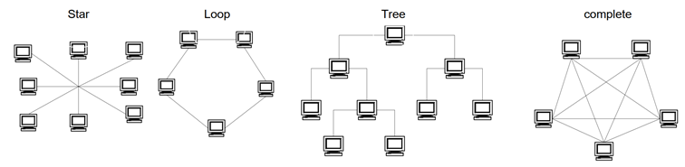
Một số topo mạng kiểu điểm-điểm
Trong kiểu quảng bá các nút nối vào đường truyền chung. Như vậy khi một nút gửi dữ liệu các nút còn lại đều nhận được. Do đó dữ liệu gửi đi cần có địa chỉ đích. Khi một nút nhận được dữ liệu nó sẽ kiểm tra địa chỉ đích xem có phải gửi cho mình không.
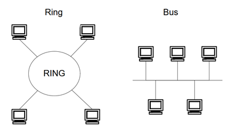
Một số topo mạng kiểu quảng bá
b. Internet
Khái niệm về Internet
Internet là một mạng máy tính có qui mô toàn cầu (GAN), gồm rất nhiều mạng con và máy tính nối với nhau bằng nhiều loại phương tiện truyền. Internet không thuộc sở hữu của ai cả. Chỉ có các uỷ ban điều phối và kỹ thuật giúp điều hành Internet. Ban đầu là mạng của Bộ Quốc phòng Mỹ (DoD) dùng để đảm bảo liên lạc giữa các đơn vị quân đội. Sau đó phát triển thành mạng cho các trường đại học và viện nghiên cứu. Cuối cùng mạng có qui mô toàn cầu và trở thành mạng Internet.
Các dịch vụ chính của Internet
Ta có thể dùng Internet để thực hiện nhiều dịch vụ mạng. Các dịch vụ thông dụng nhất trên Internet hiện nay là:
· Truyền thông tin (FTP, File Transfer Protocol)
· Truy nhập máy tính từ xa (telnet)
· Web (World Wide Web) để tìm kiếm và khai thác thông tin trên mạng
· Thư điện tử (E-mail)
· Tán gẫu (Chat) trên mạng
· …
Trong thời đại của công nghệ thông tin hiện nay Internet có nhiều lợi ích như truyền tin, phổ biến tin, thu thập tin, trao đổi tin một cách nhanh chóng thuận tiện rẻ tiền hơn so với các phương tiện khác như điện thoại, fax. Internet ảnh hưởng đến toàn bộ thế giới đến mọi ngành, mọi lĩnh vực xã hội. Hiện nay Internet thành một yếu tố quan trọng không thiếu được trong thời đại hiện nay, có mặt ở mọi nơi, mọi lĩnh vực, mọi ngành.
1.1. CÁC ỨNG DỤNG CỦA CÔNG NGHỆ THÔNG TIN VÀ TRUYỀN THÔNG
1.1.1. Một số ứng dụng trong học tập nghiên cứu, công việc và cuộc sống
1.1.1.1. Hệ thống E-Learning
a. Hệ thống E-Learning là gì?
E-Learning (Electronic Learning) đề cập đến việc đào tạo và học tập trực tuyến trên một hệ thống có sự kết nối với Internet. Phương pháp này cho phép việc giảng dạy và học tập diễn ra mọi lúc, mọi nơi, với sự hỗ trợ của các thiết bị điện tử như máy tính cá nhân, smartphone hay máy tính bảng.
Ngày nay, có nhiều ứng dụng phần mềm E-Learning khác nhau. Công tác đào tạo có thể được triển khai toàn bộ và trực tuyến trên hệ thống E-Learning, từ khâu đăng ký học, giảng dạy, thi cử đến xét tốt nghiệp cho học sinh/sinh viên. E-Learning cũng cung cấp khả năng tương tác đa dạng, từ việc đặt câu hỏi đến thảo luận và bày tỏ cảm xúc trong quá trình học.
Hệ thống E-Learning của Trường Đại học Công nghệ GTVT (UTT)
b. Các thành phần trong hệ thống E-Learning
Hệ thống E-Learning cần có 3 thành phần chính: Hệ thống quản lý học tập, quản lý nội dung học tập và công cụ làm bài giảng, cụ thể như sau:
Hệ thống quản lý học tập (LMS – Learning Management System)
LMS – Learning Management System (Hệ thống quản lý học tập) là một ứng dụng phần mềm thiết yếu giúp thiết kế, quản lý, tổ chức và phân phối các tài liệu đào tạo điện tử cho học viên
Một hệ thống quản lý học tập (LMS) bao gồm hai phần sau:
· Giao diện quản trị: Là nơi người quản lý sắp xếp tất cả các tài liệu liên quan tới việc đào tạo. Giao diện của phần mềm thường gồm các tính năng để tùy chỉnh nội dung đào tạo.
· Giao diện người dùng: Là nơi người sử dụng có thể trải nghiệm những nội dung mà quản trị viên đã tạo. Họ có thể truy cập vào bất cứ tài liệu được tạo từ máy tính hoặc trình duyệt web.
Hệ thống quản lý nội dung học tập (LCMS – Learning Content Management System)
Hệ thống quản lý nội dung học tập là hệ thống quản lý kho nội dung học tập qua mạng, cho phép tạo ra, điều chỉnh, bổ sung và quản lý các nội dung học tập một cách có khoa học, hiệu quả. Hệ thống Elearning có sự phối hợp chặt chẽ với hệ thống quản lý học tập (để truyền tải nội dung học tập tới người học) và phần mềm công cụ soạn bài giảng (để tạo ra các nội dung học tập).
Công cụ làm bài giảng (Authoring tools)
Công cụ soạn thảo bài giảng (Authoring tools) cho phép giáo viên dễ dàng cài đặt và tạo bài giảng ngay trên máy tính cá nhân. Hệ thống tạo nội dung này giúp người dạy có thể thực hiện các bài giảng thông qua hình ảnh, video, âm thanh, chữ viết đa dạng. Giúp bài học trở nên sinh động, dễ theo dõi, dễ hiểu và dễ đạt hiệu quả cao. Một số tool phổ biến có thể kể đến như: Microsoft PowerPoint, Adobe Presenter, Avina Authoring Tools, Prezi,…
c. Lợi ích của phương pháp học trực tuyến E-Learning
Hiện nay, E-Learning đang không ngừng phát triển, trở thành một công cụ không thể thiếu trong lĩnh vực giáo dục và đào tạo, đặc biệt là trong việc nâng cao kỹ năng của nhân sự các doanh nghiệp. Sự ra đời của hệ thống E-Learning đã mang lại vai trò quan trọng cho ngành giáo dục:
- Tính tiện lợi và hiệu quả chi phí: Lợi ích chính của E-Learning là sự tiện lợi. Điều này càng trở nên quan trọng khi xu hướng Hybrid Working (kết hợp giữa làm việc tại văn phòng và từ xa) ngày càng phổ biến. E-Learning đáp ứng nhu cầu này bằng cách cho phép học viên học mọi lúc, mọi nơi miễn là có kết nối Internet.
- Chi phí thấp: Học trực tuyến ít tốn kém hơn so với hình thức học truyền thống, nhờ việc giảm thiểu chi phí cho cơ sở vật chất và tài liệu giảng dạy.
- Học không giới hạn số lần: Học sinh, sinh viên có thể xem lại bài giảng trên nền tảng E-Learning bất cứ lúc nào họ muốn. Điều này tạo nên sự khác biệt so với phương pháp giảng dạy truyền thống.
- Phương pháp học tập thân thiện với môi trường: Một nghiên cứu gần đây chỉ ra rằng, học trực tuyến qua các nền tảng E-Learning giúp giảm tới 90% lượng năng lượng tiêu thụ và giảm 85% lượng khí CO2 phát thải so với hình thức đào tạo truyền thống.
1.1.1.2. Một số ứng dụng truyền thông số
Theo khoản Nghị định 42/2022/NĐ-CP và Luật Báo chí 2016 có một số quy định như sau:
Cổng thông tin điện tử là điểm truy cập duy nhất của cơ quan, đơn vị trên môi trường mạng, liên kết, tích hợp các kênh thông tin, các dịch vụ và các ứng dụng mà qua đó người dùng có thể khai thác, sử dụng và cá nhân hóa việc hiển thị thông tin.
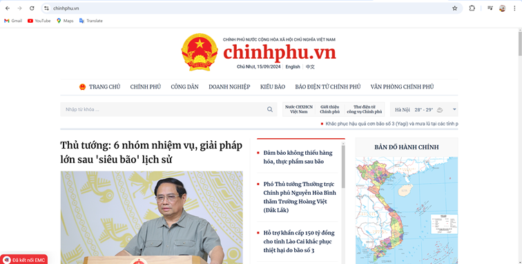
Cổng thông tin điện tử Chính phủ
Trang thông tin điện tử tổng hợp là sản phẩm thông tin có tính chất báo chí của cơ quan, tổ chức, doanh nghiệp, cung cấp thông tin tổng hợp trên cơ sở đăng đường dẫn truy cập tới nguồn tin báo chí hoặc trích dẫn nguyên văn, chính xác nguồn tin báo chí theo quy định của pháp luật về sở hữu trí tuệ.
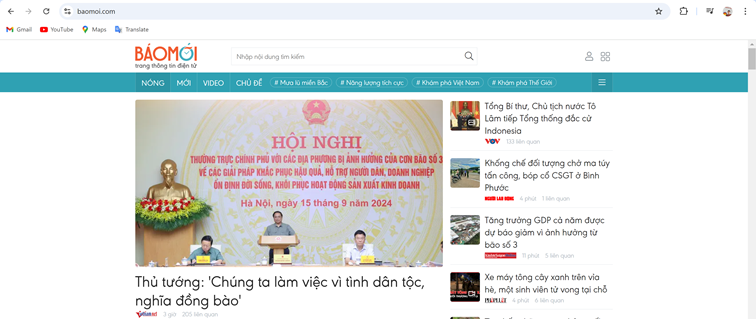
Trang thông tin điện tử tổng hợp BÁO MỚI
Báo điện tử là loại hình báo chí sử dụng chữ viết, hình ảnh, âm thanh, được truyền dẫn trên môi trường mạng, gồm báo điện tử và tạp chí điện tử.
Báo điện tử GIAO THÔNG
Tạp chí điện tử là sản phẩm báo chí xuất bản định kỳ, đăng tin, bài có tính chất chuyên ngành, được truyền dẫn trên môi trường mạng.
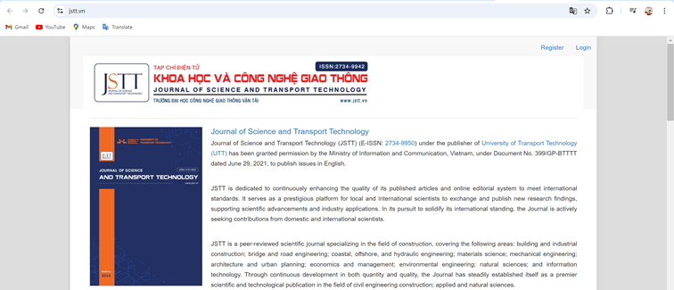
Tạp chí điện tử Khoa học và Công nghệ Giao thông
Trang thông tin điện tử cá nhân là trang thông tin điện tử do cá nhân thiết lập hoặc thiết lập thông qua việc sử dụng dịch vụ mạng xã hội để cung cấp, trao đổi thông tin của chính cá nhân đó, không đại diện cho tổ chức hoặc cá nhân khác và không cung cấp thông tin tổng hợp.
Một trang cá nhân trên mạng xã hội Facebook
Trang thông tin điện tử nội bộ là trang thông tin điện tử của cơ quan, tổ chức, doanh nghiệp cung cấp thông tin về chức năng, quyền hạn, nhiệm vụ, tổ chức bộ máy, dịch vụ, sản phẩm, ngành nghề và thông tin khác phục vụ cho hoạt động của chính cơ quan, tổ chức, doanh nghiệp đó và không cung cấp thông tin tổng hợp.
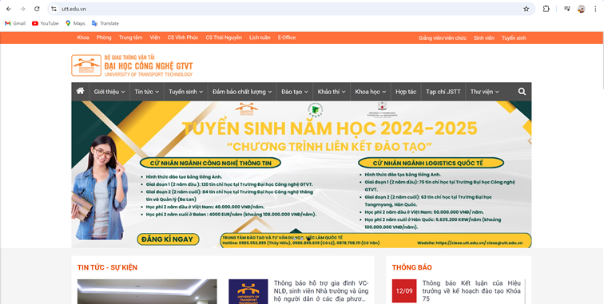
Trang thông tin điện tử nội bộ của Trường Đại học Công nghệ GTVT (UTT)
Thư điện tử hay còn được gọi là e-mail (Electronic Mail) là hệ thống được tạo lập với mục đích gửi và nhận tin nhắn thông qua mạng Internet. Nó được sử dụng để thay thế phương thức gửi và nhận thư bằng giấy theo cách truyền thống, vừa giúp tiết kiệm chi phí, vừa giúp tiết kiệm thời gian vận chuyển.
Hệ thống thư điện tử của Google (gmail)
Mạng xã hội (social network) là hệ thống thông tin cung cấp cho cộng đồng người sử dụng mạng các dịch vụ lưu trữ, cung cấp, sử dụng, tìm kiếm, chia sẻ và trao đổi thông tin với nhau, bao gồm dịch vụ tạo trang thông tin điện tử cá nhân, diễn đàn (forum), trò chuyện (chat) trực tuyến, chia sẻ âm thanh, hình ảnh và các hình thức dịch vụ tương tự khác.
Mạng xã hội LinkedIn
1.1.1.3. Ứng dụng trong quản lý nhà nước, công việc và kinh doanh
Chính phủ điện tử (E-Government)
E-Government (Electronic Government - Chính phủ điện tử) được định nghĩa theo nhiều cách khác nhau.
· Theo Ngân hàng Thế giới (World Bank): Chính phủ điện tử là việc các cơ quan của chính phủ sử dụng một cách có hệ thống công nghệ thông tin truyền thông để thực hiện quan hệ với người dân, doanh nghiệp và các tổ chức xã hội, nhờ đó giao dịch của chính phủ với người dân và các tổ chức sẽ được cải thiện, nâng cao chất lượng. Lợi ích thu được sẽ là giảm thiểu tham nhũng, tăng cường tính công khai, sự tiện lợi, góp phần vào sự tăng trưởng và giảm chi phí.
· Còn đối với Liên Hợp Quốc: Chính phủ điện tử là khái niệm về các cơ quan chính phủ sử dụng công nghệ thông tin như mạng diện rộng, Internet, các phương tiện di động để quan hệ với người dân, với doanh nghiệp và bản thân các cơ quan chính phủ.
Nhìn chung, Chính phủ điện tử là việc ứng dụng công nghệ thông tin vào hoạt động của các cơ quan chính phủ, thông qua việc cung cấp dịch vụ công trên các nền tảng như website, ứng dụng... giúp cho các cơ quan Chính phủ đổi mới phương thức giải quyết công việc theo hướng minh bạch, hiệu quả hơn, cung cấp đầy đủ, liên tục với chi phí thấp các dịch vụ công cho mọi tổ chức, cá nhân, doanh nghiệp thông qua các phương tiện thông tin điện tử.
Cổng dịch vụ công quốc gia Việt Nam
Thương mại điện tử (E-Commerce)
E-Commerce hay thương mại điện tử là hình thức mua bán sản phẩm hoặc dịch vụ thông qua các phương tiện điện tử, chủ yếu là Internet. E-Commerce cho phép các doanh nghiệp và người tiêu dùng mua bán hàng hóa trực tuyến một cách nhanh chóng, thuận tiện và chi phí thấp.
E-Commerce bao gồm một loạt các giao dịch thương mại, từ mua bán trực tuyến, thanh toán điện tử, đến việc quảng cáo và tiếp thị trực tuyến. Trong môi trường kinh doanh đặc biệt này, doanh nghiệp có thể tận dụng sức mạnh của Internet để tiếp cận đến khách hàng trên toàn thế giới mà không gặp rào cản về vị trí địa lý.
Sàn E-Commerce là một nền tảng trực tuyến mà các doanh nghiệp và cá nhân có thể sử dụng để mua bán hàng hóa và dịch vụ. Đây là nơi mà người bán đăng tải thông tin về sản phẩm, quảng cáo, và thực hiện các giao dịch thương mại điện tử với khách hàng. Sàn E-Commerce đóng vai trò như một “chợ trực tuyến” kết nối người mua và người bán từ khắp mọi nơi.
Có nhiều loại sàn E-Commerce khác nhau, từ các sàn lớn quốc tế như Amazon, eBay, và Alibaba đến các sàn chuyên ngành như Etsy cho nghệ sĩ và thủ công, hay Shopify cho doanh nghiệp muốn tạo và quản lý cửa hàng trực tuyến của mình. Mỗi sàn có đặc điểm và ưu điểm riêng, tùy thuộc vào mục tiêu kinh doanh của người sử dụng.
Một số đặc điểm chung của các sàn E-Commerce bao gồm:
· Cung cấp các phương tiện thanh toán an toàn và bảo vệ thông tin tài khoản khách hàng.
· Cho phép người bán dễ dàng đăng thông tin về sản phẩm, cập nhật giá cả và quản lý tồn kho.
· Hỗ trợ các phương tiện thanh toán trực tuyến như thẻ tín dụng, ví điện tử, và các dịch vụ thanh toán khác.
· Cho phép người mua đánh giá sản phẩm và đồng thời tạo cơ hội để người bán nhận phản hồi từ khách hàng.
· Cung cấp các kênh liên lạc để hỗ trợ khách hàng và giải quyết vấn đề.
Sử dụng sàn E-Commerce có thể giúp doanh nghiệp tiếp cận lượng lớn khách hàng trực tuyến một cách hiệu quả và thuận tiện, mở rộng phạm vi kinh doanh và tăng cơ hội bán hàng.
Ngân hàng điện tử (E-Banking)
E-Banking là viết tắt của Electronic Banking, là dịch vụ ngân hàng điện tử, cho phép khách hàng thực hiện các giao dịch ngân hàng thông qua các thiết bị điện tử có kết nối Internet như máy tính, điện thoại di động, máy tính bảng.
E-Banking cung cấp một loạt các dịch vụ ngân hàng, bao gồm:
- Chuyển khoản: Chuyển tiền trong và ngoài hệ thống ngân hàng, chuyển tiền quốc tế.
- Thanh toán hóa đơn: Thanh toán hóa đơn điện, nước, điện thoại, Internet, truyền hình,...
- Nạp tiền điện thoại: Nạp tiền điện thoại trả trước, trả sau.
- Thanh toán vé máy bay, vé tàu, vé xem phim,...
- Mua sắm trực tuyến: Thanh toán mua sắm trực tuyến tại các trang web thương mại điện tử.
- Truy vấn thông tin tài khoản: Xem số dư tài khoản, lịch sử giao dịch,...
- Đặt lịch hẹn giao dịch: Đặt lịch hẹn giao dịch tại quầy giao dịch ngân hàng.
Làm việc từ xa (Tele-Commuting hay Tele-Working)
Làm việc từ xa là định nghĩa dùng để chỉ hình thức làm việc mà ở đó người lao động có thể làm việc ở bất cứ đâu thay vì phải tới văn phòng. Đối với hình thức này, mọi hoạt động từ giao tiếp, trao đổi và các hoạt động khác đều diễn ra trên các nền tảng trực tuyến. Bạn có thể ngồi ở nhà, quán cafe hay bất kỳ nơi nào để làm việc, miễn là nơi đó đáp ứng đủ điều kiện để sử dụng các thiết bị công nghệ hay các phương tiện liên lạc online.
Để hoạt động một cách hiệu quả, các cá nhân cần trang bị đầy đủ thiết bị và công nghệ như: máy tính kết nối mạng, điện thoại thông minh, tài khoản trên các nền tảng online hoạt động chung của doanh nghiệp.
Trong một số trường hợp thì người lao động có thể cũng cần tới máy fax hoặc một số loại máy móc chuyên dụng khác, tùy theo yêu cầu của công ty. Những thiết bị công nghệ mà người lao động sẽ cần khi làm việc từ xa bao gồm: Máy tính để bàn hoặc laptop, thiết bị di động, máy fax (tùy đặc thù từng ngành nghề). Ngoài ra người lao động cần đăng ký cả tài khoản email cũng như tài khoản trên các ứng dụng họp mặt trực tuyến (nếu cần thiết).
Hội nghị từ xa (Tele-Conference)
Hội nghị từ xa hay còn được gọi là hội nghị trực tuyến là giải pháp hạn chế tiếp xúc trực tiếp, đảm bảo duy trì hoạt động sản xuất kinh doanh từ xa. Đây là cách tổ chức cuộc họp thông qua hệ thống viễn thông, sử dụng mạng Internet để truyền tải tín hiệu âm thanh và hình ảnh giữa các địa điểm với nhau.
Hội nghị truyền hình trực tuyến cũng được gọi là teleconference. Đây là từ được ghép bởi “telecommunications” và “conference”, có nghĩa là những thành viên không có mặt trực tiếp có thể tham dự cuộc họp trực tuyến thông qua các thiết bị hỗ trợ (camera, laptop, smartphone…).
Chính nhờ tính năng này mà hầu hết tổ chức, doanh nghiệp đều có thể sử dụng. Các chương trình đào tạo ở trường đại học hoặc một số trung tâm, bệnh viện lớn cũng dễ dàng triển khai hình thức này.
Hội nghị khoa học quốc tế CIGOS 2021 được tổ chức tại UTT năm 2021
1.1.1. Trí tuệ nhân tạo (AI) và ứng dụng trong cuộc sống
Trí tuệ nhân tạo hay trí thông minh nhân tạo (Artificial Intelligence – viết tắt là AI) là một ngành thuộc lĩnh vực khoa học máy tính (Computer Science). Là trí tuệ do con người lập trình tạo nên với mục tiêu giúp máy tính có thể tự động hóa các hành vi thông minh như con người. Cụ thể, trí tuệ nhân tạo giúp máy tính có được những trí tuệ của con người như: biết suy nghĩ và lập luận để giải quyết vấn đề, biết giao tiếp do hiểu ngôn ngữ, tiếng nói, biết học và tự thích nghi,…
Công nghệ AI tạo ra máy móc và hệ thống thông minh thông qua việc sử dụng mô hình máy tính, kỹ thuật và công nghệ liên quan, giúp thực hiện các công việc yêu cầu trí thông minh của con người. Nhìn chung, đây là một ngành học rất rộng, bao gồm các yếu tố tâm lý học, khoa học máy tính và kỹ thuật. Một số ví dụ phổ biến về AI có thể kể đến ô tô tự lái, phần mềm dịch thuật tự động, trợ lý ảo trên điện thoại hay đối thủ ảo khi chơi trò chơi trên điện thoại.
Có thể hiểu đơn giản đó là trí tuệ của máy móc được tạo ra bởi con người. Trí tuệ này có thể tư duy, suy nghĩ, học hỏi,… như trí tuệ con người. Xử lý dữ liệu ở mức rộng lớn hơn, quy mô hơn, hệ thống, khoa học và nhanh hơn so với con người.
Rất nhiều hãng công nghệ nổi tiếng có tham vọng tạo ra được những AI (trí tuệ nhân tạo) vì giá trị của chúng là vô cùng lớn, giải quyết được rất nhiều vấn đề của con người mà loài người đang chưa giải quyết được.
Ứng dụng của Trí tuệ nhân tạo (AI)
Trong ngành y tế
Trí tuệ nhân tạo đã tiến những bước khá dài trong lĩnh vực y tế khi hỗ trợ cải thiện kết quả chẩn đoán, phân tích tình trạng và mã gene bệnh nhân để đưa ra liệu trình cá nhân hóa, đẩy nhanh tốc độ phát triển thuốc, và tăng cường cho các hệ thống chẩn bệnh từ xa.
Trí tuệ nhân tạo cũng được tích hợp vào các thiết bị đeo thông minh và các hệ thống giám sát y tế IoT. Những công nghệ này sẽ liên tục thu thập dữ liệu quý giá liên quan bệnh nhân, như nhịp tim, huyết áp, nồng độ glucose…để các nhân viên y tế có thể kiểm tra và theo dõi các tình trạng bệnh mãn tính hiệu quả hơn.
Ngoài ra, trí tuệ nhân tạo còn đóng góp lớn vào cải thiện sức khỏe tâm thần của người bệnh thông qua các hệ thống hỗ trợ cá nhân hóa. Các chatbot và chuyên gia trị liệu ảo, được tạo ra nhờ các thuật toán xử lý ngôn ngữ tự nhiên và học máy, có thể tương tác với người dùng trong các phiên trị liệu, giúp họ giải tỏa các triệu chứng căng thẳng, trầm cảm, và các vấn đề sức khỏe tâm thần khác.
Trong dịch vụ khách hàng
Trong lĩnh vực dịch vụ khách hàng, các trợ lý ảo và chatbot tích hợp trí tuệ nhân tạo đã giúp đơn giản hóa và cải thiện quy trình hỗ trợ bằng cách cung cấp câu trả lời tức thì, 24/7, cho mọi truy vấn từ khách hàng.
Các hệ thống tổng đài tự động hiển nhiên đạt năng suất cao gấp nhiều lần con người, trong khi trí tuệ nhân tạo hỗ trợ phân tích cảm xúc khách hàng cho phép các doanh nghiệp hiểu rõ hơn về tình trạng của khách hàng, từ đó phản ứng phù hợp hơn.
Các doanh nghiệp còn dùng trí tuệ nhân tạo để phân tích dữ liệu người tiêu dùng – bao gồm hành vi, sở thích và lịch sử mua sắm – rồi dùng dữ liệu đó để mang lại một trải nghiệm siêu cá nhân hóa.
Thuật toán trí tuệ nhân tạo cũng có thể tự động đề xuất sản phẩm, giới thiệu các chương trình khuyến mãi, cũng như đưa ra các nội dung liên quan sản phẩm mà khách hàng quan tâm.
Trong ngành tài chính
Các tổ chức tài chính hiện đang triển khai trí tuệ nhân tạo để phát hiện lừa đảo, thực hiện giao dịch, chấm điểm tín nhiệm, và đánh giá rủi ro. Các thuật toán học máy có thể xác định các giao dịch nghi vấn trong thời gian thực, trong khi đó các hệ thống giao dịch thuật toán có tốc độ thực thi lệnh cực nhanh và chính xác.
Với trí tuệ nhân tạo, các tổ chức tài chính có thể đánh giá rủi ro chính xác hơn, từ đó cải thiện các quyết định cho vay và thực hiện các chiến lược đầu tư.
Trí tuệ nhân tạo còn cách mạng hóa lĩnh vực hoạch định tài chính và quản lý tài sản, bằng cách tạo ra đội quân tư vấn viên robot siêu thông minh, chăm sóc được những tệp khách hàng đa dạng, từ các nhà đầu tư mới cho đến các chuyên gia dày dạn kinh nghiệm thương trường. Các nền tảng trí tuệ nhân tạo sử dụng thuật toán cao cấp để phân tích xu hướng thị trường, đánh khả năng chịu đựng rủi ro khách hàng và đề xuất các hình thức đầu tư cá nhân hóa.
Trong sản xuất
Các ứng dụng của trí tuệ nhân tạo trong sản xuất bao gồm kiểm soát chất lượng, bảo trì dự đoán, tối ưu hóa chuỗi cung ứng, và robot.
Các thuật toán tiên tiến đảm bảo chất lượng bằng cách phát hiện lỗi trong sản phẩm, trong khi bảo trì dự đoán sẽ tối thiểu hóa thời gian ngừng hoạt động của các trang thiết bị.
Các công ty có thể tối ưu chuỗi cung ứng, từ đó phân phối tài nguyên hiệu quả hơn. Các cơ sở sản xuất cũng có thể sử dụng robot để tăng năng suất và mức độ chính xác trong các quy trình.
Trong vận tải
Ô tô và xe tải tự lái sẽ giảm thiểu sơ suất từ con người và cải thiện độ an toàn trong lưu thông, đồng thời các hệ thống quản lý giao thông thông minh có thể giúp hạn chế tắc nghẽn. Các thuật toán tối ưu hóa tuyến đường sẽ giúp tiết kiệm thời gian và nhiên liệu, trong khi drone có thể phục vụ giao hành nhanh chóng và thân thiện với môi trường.
Trí tuệ nhân tạo cũng tăng cường và cải thiện các hệ thống vận tải công cộng bằng cách dự đoán nhu cầu của hành khách và tối ưu hóa lịch trình.
Trong nông nghiệp
Trên đồng ruộng và trong lĩnh vực công nghệ nông nghiệp (AgTech), người nông dân và các nhà khoa học đang sử dụng trí tuệ nhân tạo để giám sát vụ mùa, dự báo thời điểm thu hoạch và diệt trừ sâu bệnh. Các hệ thống nông nghiệp chính xác cao sử dụng trí tuệ nhân tạo giúp người nông dân đưa ra những quyết định dựa trên dữ liệu thu được để tối ưu hóa hệ thống tưới tiêu, cải thiện khả năng bón phân và giảm rác thải.
Nông dân cũng đang tích cực sử dụng các loại máy móc tự hành, có thể xem chúng như một cuộc cách mạng đối với nông nghiệp truyền thống. Máy cày tự lái được trang bị các cảm biến tiên tiến, GPS, và hệ thống điều khiển bằng trí tuệ nhân tạo có thể thực hiện các tác vụ như cày, xới, gieo hạt, và phun nước/thuốc với độ chính xác và hiệu quả cao.
Trong bán lẻ
Các công ty bán lẻ hiện đang sử dụng trí tuệ nhân tạo để quản lý kho hàng và tiếp thị nhắm mục tiêu, đồng thời tạo ra các hệ thống đề xuất cá nhân hóa và chăm sóc khách hàng bằng chatbot.
Các nhà bán lẻ cũng tích hợp công nghệ tìm kiếm thị giác vào các cửa hàng trực tuyến để khách hàng tìm sản phẩm bằng cách upload ảnh, thay vì dựa trên các truy vấn từ khóa truyền thống. Các loại engine tìm kiếm thị giác bằng trí tuệ nhân tạo này có thể phân tích các đặc điểm của ảnh được upload và cung cấp một danh sách các sản phẩm tương tự để khách hàng ra quyết định mua sắm.
Trong giáo dục
Trong lớp học, hệ thống học thích ứng sẽ sắp xếp nội dung học tập phù hợp với nhu cầu của từng sinh viên, trong khi thuật toán phát hiện “đạo văn” sẽ đảm bảo tính công bằng và trung thực trong các kỳ thi. Giáo viên thậm chí có thể sử dụng các hệ thống phân tích dữ liệu để dự báo hiệu suất học tập của sinh viên, từ đó can thiệp sớm nếu phát hiện vấn đề.
Trí tuệ nhân tạo cũng đóng một vai trò đáng kể trong việc phổ cập giáo dục, đặc biệt đối với những khu vực vùng sâu vùng xa. Các công cụ dịch thuật trí tuệ nhân tạo và phiên dịch thời gian thực sẽ xóa bỏ mọi rào cản ngôn ngữ, cho phép sinh viên toàn cầu tiếp cận nội dung giáo dục từ bất cứ đâu trên thế giới.
Bên cạnh đó, các gia sư ảo tích hợp trí tuệ nhân tạo có thể cung cấp dịch vụ dạy kèm 1-1, bổ trợ kiến thức cho sinh viên ngoài giờ học chính, và đảm bảo đưa các chương trình giáo dục chất lượng đến một lượng lớn học viên hơn nữa.